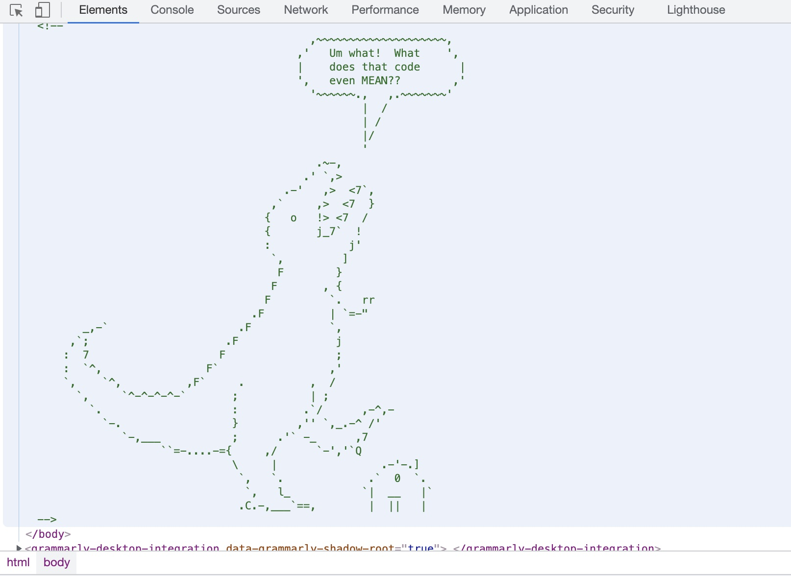

DIG 245 View Source
Emily Schmitt
September 6, 2021
How to Use Dev Tools
If you've ever used the internet (I know you have because you're reading this right now),
you've probably come across some cool websites or pages and wondered "how did they make that???"
Well, with Dev Tools, you can find out. Diving into the source code behind your favorite websites can
teach you a ton about coding and design and it's easy to do! Just follow these simple steps.
- This can be done on any website, but for these instructions we'll practice with Tess Smith Robert's art site
- Dev Tools will only fuction on Chrome, so be sure to either download the Chrome browser and open your website in the Chrome app.
- Navigate to the webpage and right-click anywhere to open up your menu.
Be sure to click somewhere that won't take you anywhere else on the page, like a button or shopping cart.
- Once you're in the menu, click on 'inspect.'
- A window will pop up on the right-hand side of your screen. You are now inside that website's source code!
If you want to learn about some more thing syou can dow with Dev tools, check out our list below!
Other Cool Things to Do With Dev Tools
- a;lskdfja;slkdjf
- ;alskdjf;laskdjf
- aksdjf;laksdjf
A New Metaphor
There's nothing quite like a great metaphor...
Using Dev Tools is lifting the veil of a bride on her wedding day.
- You know what they look like, I mean you're marrying them today. Yet, lifitng the veil reveals more
beauty than you ever could have imagined.
- You understand them more now than ever before. You're ready to say, I do. Because, looking into their
eyes, after you've lifted their veil - the truth is revealed and love ensues.
A Hidden Message
If you use the Dev Tool steps above, you can find a bunch of hidden surprises in many webstie's source codes.
For example, inside Dinosaur Comics' source code you can find this hidden dinosaur image:

This is how I feel about learning HTML and CSS a lot of the time.